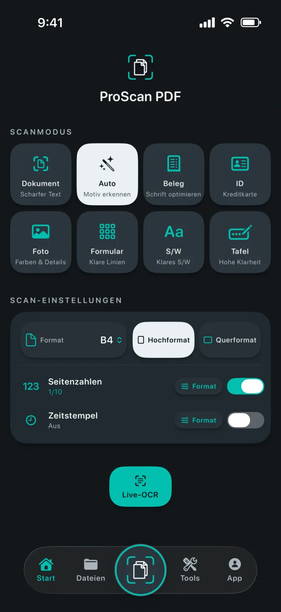
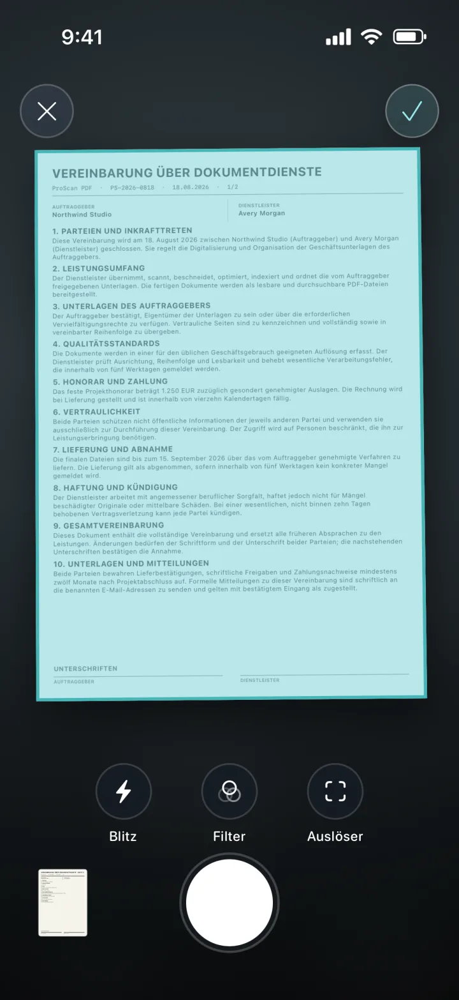
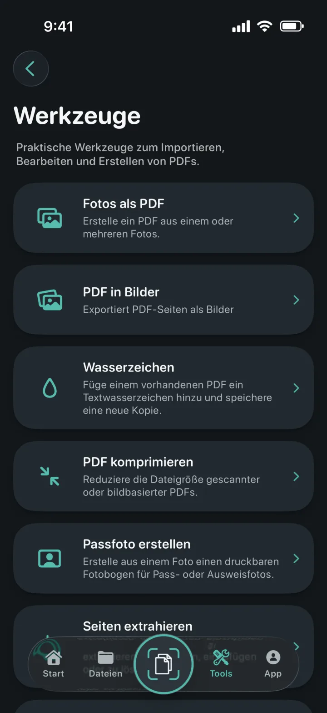
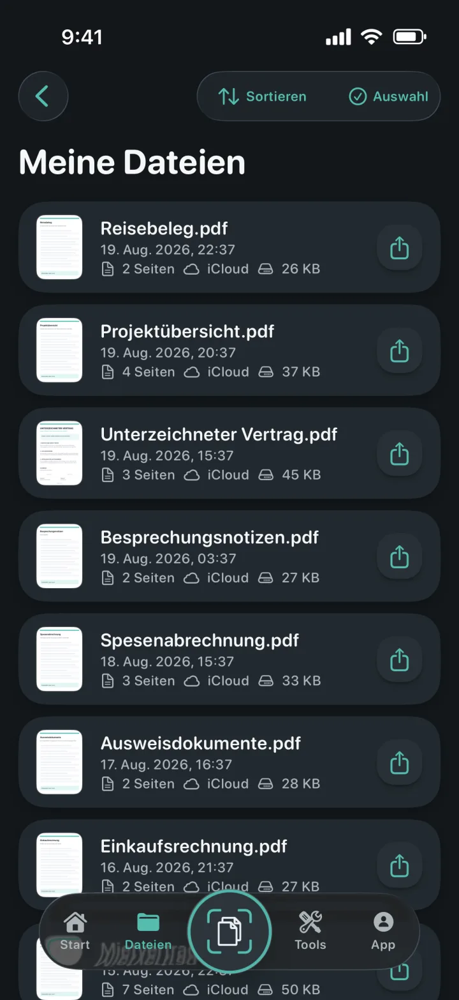
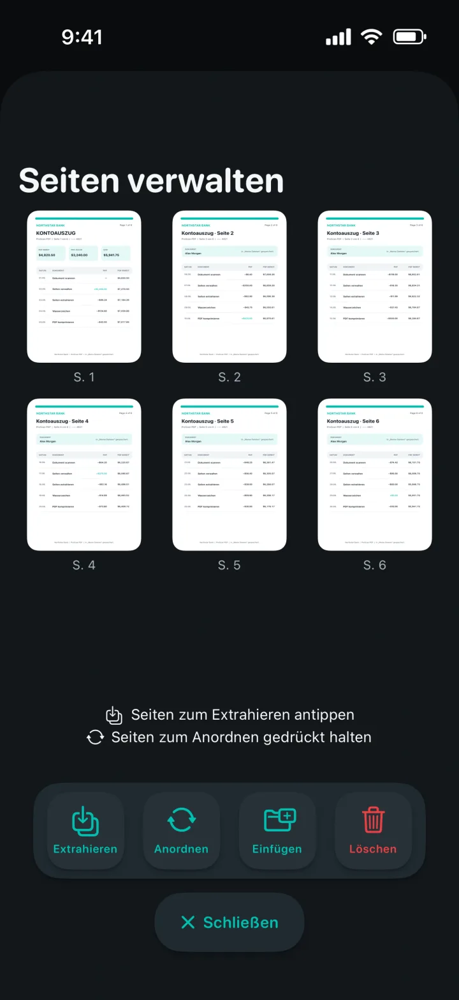
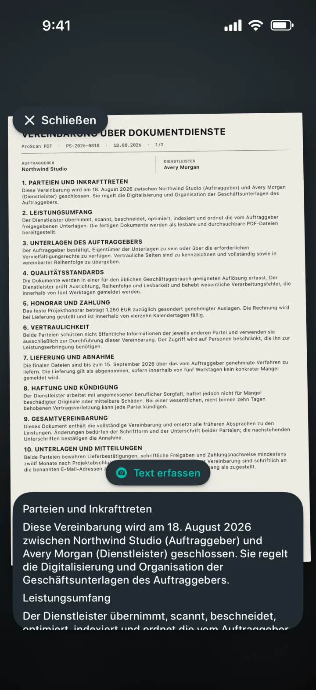

Paper on Ink
Türkis und Papierweiß auf dunklem Graphit.
Ein Scanner, der jede Seite versteht
Verwandeln Sie Dokumente, Belege, Ausweise, Notizen und Fotos in saubere PDFs. Anschließend können Sie sie ohne Werbung oder Wasserzeichen bearbeiten, unterschreiben, schützen und teilen.

Ein Scanner, der jede Seite versteht
Wählen Sie den passenden Modus, richten Sie die Seite aus und überlassen Sie die Aufnahme Apples Dokumentenscanner. Seitengröße, Ausrichtung, Seitenzahlen und Zeitstempel legen Sie einfach vor dem Start fest.

Alle PDF-Werkzeuge an einem Ort
Importieren, konvertieren, bearbeiten und erstellen Sie PDFs in einem übersichtlichen Arbeitsbereich.

Verwandeln Sie ein oder mehrere Fotos in eine übersichtliche PDF-Datei.
Exportieren Sie jede PDF-Seite als Bild und speichern oder teilen Sie sie.
Fügen Sie einer neuen PDF-Kopie farbige Textwasserzeichen hinzu.
Verkleinern Sie gescannte und bildbasierte PDF-Dateien.
Fotos zuschneiden, prüfen und in exakten Größen oder auf Druckbögen ausgeben.
PDF-Seiten extrahieren, neu anordnen, einfügen oder löschen.
Erstellen Sie bearbeitbare Word-Dateien und erhalten Sie das Layout, soweit möglich.
Erstellen Sie durchsuchbare Kopien und finden Sie Text direkt im Dokument.


Dokumente, bestens organisiert
Lokale Kopien sorgen dafür, dass sich Ihre Bibliothek schnell öffnet. Ein privates iCloud-Backup hilft, Dokumente beim Wechsel auf ein anderes Apple-Gerät verfügbar zu halten.
Datenschutz ist Teil der Architektur
Scannen, OCR und PDF-Verarbeitung erfolgen direkt auf Ihrem Gerät. ProScan PDF lädt Ihre Dokumente nicht auf eigene Server hoch.
Datenschutzerklärung lesenOCR und durchsuchbare Dokumente
Erfassen Sie Text live, extrahieren Sie bearbeitbare Inhalte aus Scans oder erstellen Sie durchsuchbare PDF-Kopien. Alles wird direkt auf Ihrem iPhone oder iPad verarbeitet.

Für Sie gestaltet
Jedes Design verändert die Oberfläche der App und bietet ein passendes Icon für den Home-Bildschirm.
Türkis und Papierweiß auf dunklem Graphit.
Leuchtendes Cyan und Violett auf tiefem Schwarz.
Klare blaue Bedienelemente auf hellem Papierweiß.
Koralle, Violett und Mint auf weichem Anthrazit.
Champagner und Rosé auf edlem Mitternachtsblau.
Kühles Silber und poliertes Gold auf Graphit.
Warme Creme- und Terrakottatöne auf tiefem Waldgrün.
Verfügbar auf Englisch, Deutsch, Spanisch, Französisch, Italienisch, Niederländisch, Polnisch, brasilianischem Portugiesisch, europäischem Portugiesisch, Türkisch, vereinfachtem Chinesisch, Japanisch, Koreanisch und Hindi.
Antworten auf wichtige Fragen
Klare Informationen zu Datenschutz, Speicherung und den Möglichkeiten von ProScan PDF.
Nein. ProScan PDF zeigt keine Werbung und fügt gescannten Dokumenten keine Wasserzeichen hinzu.
Die wichtigsten Scan-, OCR- und PDF-Werkzeuge laufen direkt auf Ihrem Gerät und funktionieren offline. Für iCloud-Backups und das Teilen ist eine Internetverbindung erforderlich.
Dokumente bleiben für schnellen Zugriff in der lokalen Mediathek der App. Wenn iCloud verfügbar ist, können private Sicherungskopien in Ihrem iCloud-Konto gespeichert werden.
Fotos als PDF, PDF in Bilder, Wasserzeichen, Komprimierung, Passfoto-Erstellung, Seitenextraktion und -verwaltung, PDF zu Word, durchsuchbare PDFs, Zusammenführen, Unterschriften und Passwortschutz.
Sie erhalten jeden Tag drei kostenlose Scans. Pro schaltet unbegrenztes Scannen und alle Pro-Werkzeuge frei.

Ihr nächstes Dokument ist nur einen Fingertipp entfernt
Keine Werbung. Keine Wasserzeichen.